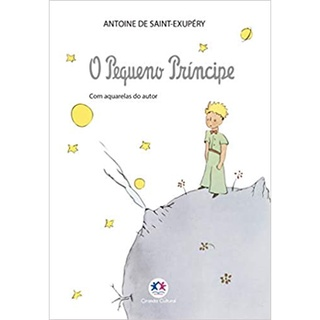
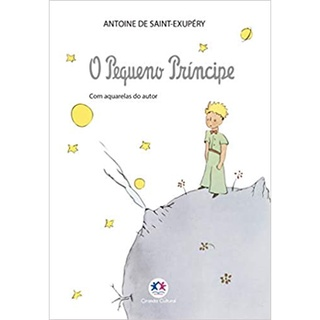
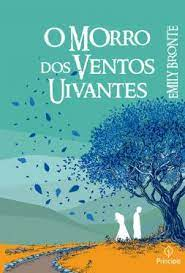
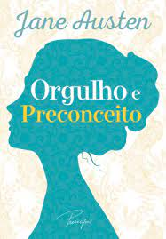
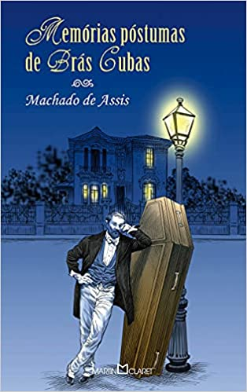
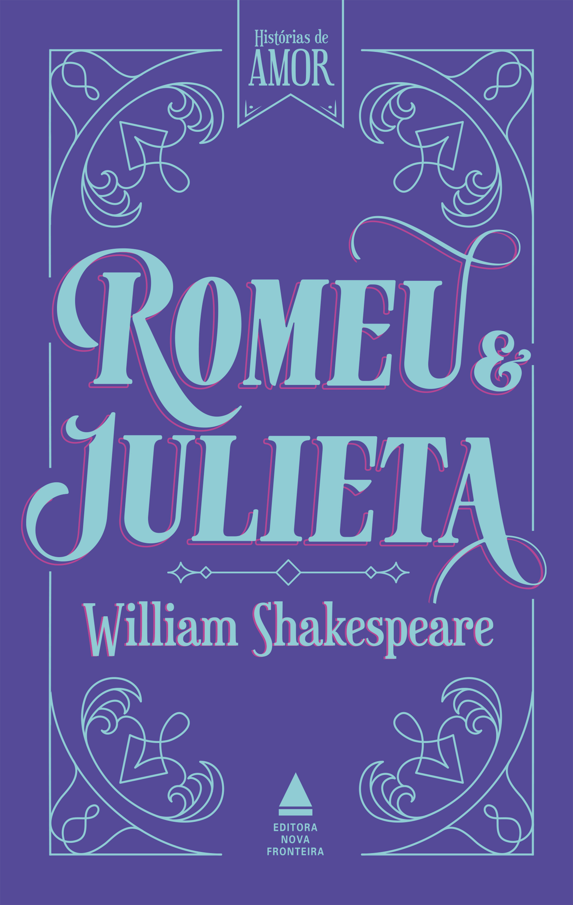
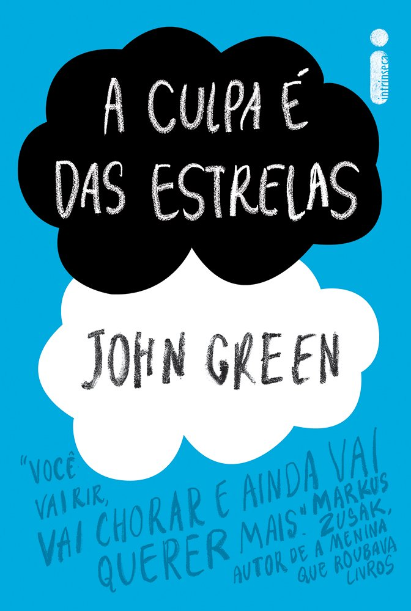
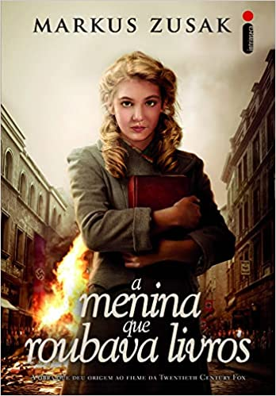

|  |  |
A leitura é de extrema importância para todos,ela libera a criatividade, proporciona viajar para muitos lugares, ajuda nas atividades esolares, estimula o vocabulário, o raciocínio, entre outros benefícios.
Porém, esse hábito vem sido deixado de lado,devido ao aumento do uso da internet. Para ajudar a esse hábito maravilhoso acontecer, procurei alguns livros incriveis para incentivar a leitura.
|  | |
O Pequeno Príncipe - Antoine de Saint-Exupéry
O Cortiço - Aluísio Azevedo
O Morro dos Ventos Uivantes - Emily Brontë
A Matamorfose - Franz Kafka

1984 - George Orwell

A Revolução dos Bichos - George Orwell

Odisseia - Homero

Orgulho e Preconceito - Jane Austen
Dom Casmurro - Machado de Assis

Memórias Póstumas de Brás Cubas - Machado de Assis
O Retrato de Dorian Gray - Oscar Wilde

Fahrenheit 451 - Ray Bradbury

Romeu e Julieta - Shakespeare
Hamlet - Shakespeare

Harry Potter - J. K. Rowling

Jogos Vorazes- Suzanne Collins

As Crônicas de Nárnia - C. S. Lewis

Essa série é inspirada na trilogia de livros da autora Jenny Han
São três filmes inspirados em uma trilogia da mema autora de O Verão que Mudou Minha Vida
A Culpa é das Estrelas
A Cinco Passos de Você
A Menina que Roubava Livros
